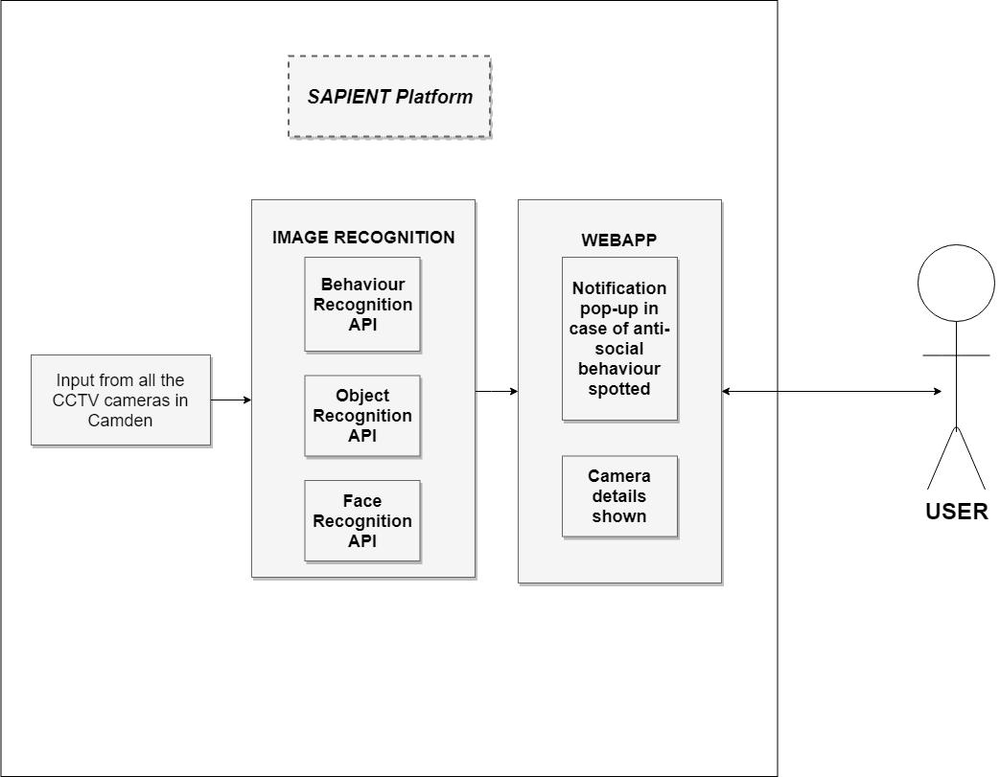

Background
The project assigned to our team is called CCTV Analysis with AI (Artificial Intelligence) and our client is the Camden Council. With more than 4 million cameras installed in the whole United Kingdom, Camden has a large number of CCTVs that need monitoring. Due to the lack of personnel in the CCTV monitoring section of Camden Council, they decided to use a software that will help in the analysis of the CCTV footage. The system we were asked to build should have AI and ML (Machine Learning) embedded in it. This will help in making it better over time so that it can be used on its own in the near future. The major requirement of this system is to analyse the footage and notify the users in case of any anti-social behaviour.
Project Goals
Due to the complexity of the project the client made clear from the first meeting that they do not expect a high end working software that will predict accurately any possible case of anti-social behaviour. They explained that the project goal is to build something simple which works, test it for a few years and then develop it further over the years in order to reach the end goal of monitoring the CCTVs solely using this software. The client wants us to develop the CCTV AI which can recognise items, human and postures of the people. Since the government has their own monitoring UI, they do not require us to build a user interface, but build something in order to let them know that the CCTV AI is working.
Requirement Gathering
Gathering the requirements of this project was accomplished by establishing a close cooperation with our client. We held regular meetings almost every Monday in the client's offices near Kings Cross Station. Other than the meetings held any questions raised as we worked on the project during the week were answered by the client using emails. Every two weeks we were asked to write a Progress Report which was also send to the client by the team leader. In this way the client could keep track of our progress and guide us in case of any fault. Since there was only one requirement made by the client our requirement gathering process was really easy. We made a few suggestions to the client for adding extra features in the software. Since these features were considered as extra by the client we stored them in the Could Have area of the MoSCoW requirements list.
Personas
The typical users for this application will be the security guards in the CCTV monitoring centre. Jack Ramsey is one of the operators in the CCTV centre, his daily job is to monitor around 100 cameras in Camden. In addition, when there is a suspicious thing going on in the street, he can contact the police to investigate the area. Ms. Park is the leader of the operating team, and her job is to allocate the tasks to her colleagues and make a decision when there is an emergent event going on.
Storyboards
The following process is the goal of our sapient platform.

- There are thousands of cameras around Camden, the users who are the CCTV operators in surveillance room use the Sapient platform to monitor if there is any suspicious situation in Camden.
- Sapient Platform can automatically help the users to show up the cameras which require attention to check whether there is need of making emergency call to specific department.
- Traditionally, CCTV operators have to look through each camera, so that they know which camera needs attention.
MoSCoW Requirement List
After the completion of our requirement gathering technique we separated each requirement based on its priority and stored them in the MoSCow requirement list defining them as functional and non-functional tasks.
| ID | Name / Description | Type |
|---|---|---|
| Must Haves | ||
| 1 | Posture Recognition;
- Recognize all the people within the video frame, whether they are sitting, standing or lying on a bench. - Extend the old implementation from 3 people up to unlimted. |
Functional |
| 2 | Object Recognition;
- Implement the object recognition feature in order to understand also objects other than people. Notify in case of suspicious items, like knives, guns and bombs. |
Functional |
| 3 | Face Recognition;
- Implement face recognition feature in order to make our system more sophisticated, also allow future use of tracking down wanted criminals based on the police database. |
Functional |
| 4 | Cloud based;
- Build the system as a cloud platform in order to allow adjusting scalability and durability easily depending on the demand. |
Functional |
| Should Haves | ||
| 5 | Real-time;
- Work on real-time footage so that it can be used on live video directly from the cameras |
Functional |
| Could Haves | ||
| 6 | User Interface;
- There is no need for a User Interface to be created since the client is happy with their current monitoring software. Instead a single home page will be created simply to show the notifications from the system we built. |
Functional |
| Won't Have | ||
| 7 | Notifications;
- Notify the staff monitoring the CCTVs when a suspicious behaviour is spotted, include camera number and name in order to make it easier for them. |
Functional |
Use Case
Based on the information we gathered, we started creating use cases in order to show how the system will interact with one another. A list of all the use cases with their description follows along with the overall use case diagram.
Use Case Diagram
The diagram that follows shows the functionalities of our developed software and how they interact with each other.
The overall use case diagram shown above demonstrates how the whole system is working. Due to the type of our project there is no interaction with the user, the whole system is automated. Therefore, we display the tasks that occur automatically within the system. The only interaction that the user has is the notifications that pop-up in the web app.
List of Use Cases
From the overall use case diagram we had to take each use case and analyze it further. Description, Preconditions and postconditions for each one had to be noted in order for the development to occur flawlessly. A list with all the use cases follows.